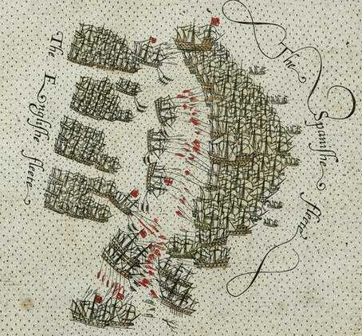
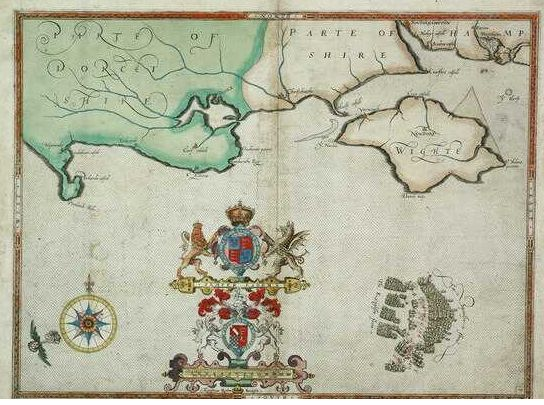
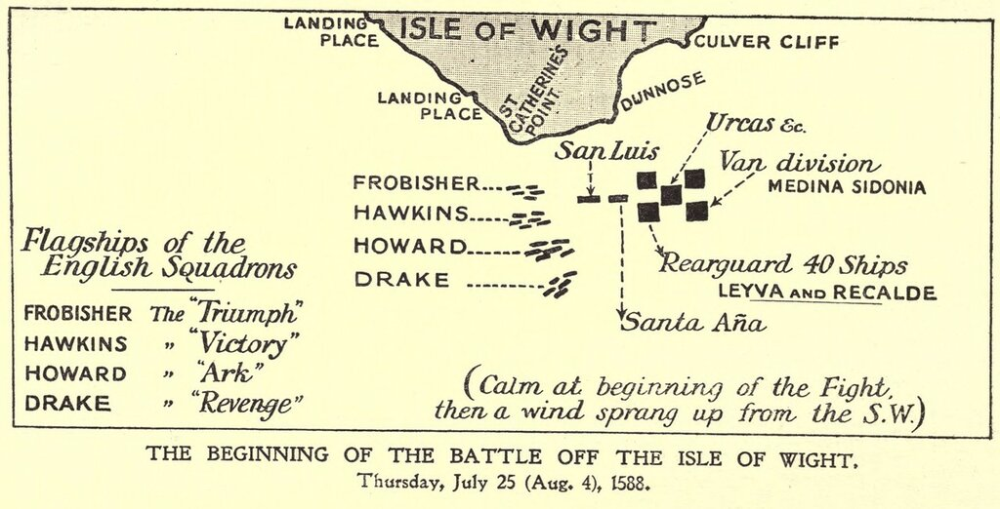
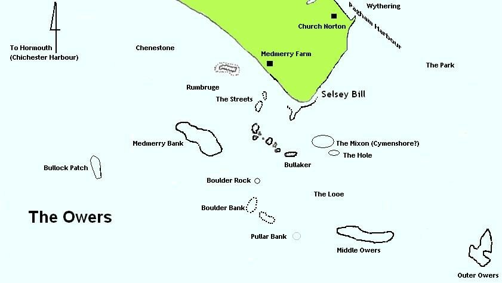

Боевые действия у острова Уайт (продолжение)
Осторожность нужна большая, так как здесь нетрудно сесть на мель.
А. П. Чехов. Остров Сахалин
Напомним, что во время боевых действий у острова Уайт 4 августа 1588 года англичане впервые применили «тактику четырех эскадр», о которой они договорились на военном совете, состоявшемся на борту Ark Royal 3 августа.

Сражение у острова Уайт 4 августа 1588 года.
Это изображение – фрагмент одной из десяти гравированных карт маршрута Непобедимой армады, раскрашенных вручную (плюс один обзорный лист, плюс титульный лист).
Приведем данный лист полностью

Господствующее направление ветра показано рядом с картушкой компаса в левом нижнем углу. Карта исполнена в 1590 году известным картографом Робертом Адамсом и входит в общий альбом под названием Expeditionis Hispanorum in Angliam vera descriptio Anno Do. MDLXXXVIII.
Оценить общую ситуацию нам поможет схема положения флотов 4 августа 1588 года, взятая из книги Hale, John Richard, The Story of the Great Armada, стр. 221.

В предыдущем рассказе мы остановились на том, как счастливо избежал захвата галеон Фробишера Triumph. Все корабли Армады, вынужденные подчиниться команде флагмана, заняли свои места в походном ордере и продолжили движение к берегам Фландрии, потеряв за истекшие сутки пятьдесят человек убитыми и семьдесят ранеными, что привело к суммарным потерям испанцев с момента входа в Ла-Манш в размере 167 убитых и 241 раненых (по официальным данным испанцев; реальные потери были, конечно, выше, один взрыв на Сан Сальвадоре чего стоил. Но, занижая цифры потерь, испанские командиры могли присваивать жалованье убитых, но не объявленных таковыми, себе. Впрочем, такая циничная арифметика была в употреблении не только у испанцев, но и у англичан).
Во второй половине 4 августа новая опасность для испанцев возникла на южном, мористом фланге Армады, который был атакован эскадрой под командованием Дрейка. Формально, на этом фланге должен был находиться Рекальде на своем галеоне San Juan, но адмирал ушел на помощь испанскому авангарду и ввязался в бой с английским Bear. В его отсутствие силы правого фланга возглавил другой португальский галеон - San Mateo, который был на три сотни тонн меньше «Сан Хуана» и имел всего тридцать четыре орудия. Он не выдержал атаки кораблей Дрейка и вынужден был отойти в центр боевого ордера испанцев, уступив место более мощной Florencia. Эти перестроения, хотя и не нарушили походного ордера Армады, создали некоторую толчею на фланге испанцев, что упростило задачу Дрейку.
Герцог Медина-Сидония не особенно беспокоился за судьбу своего южного фланга, хотя и контролировал с мостика флагмана Сан Мартин происходящие там события. Однако флагманский штурман Армады, находившийся за спиной герцога, был обеспокоен куда больше.
К югу от мыса Селси Билл (Selsey Bill) в Ла-Манше расположена группа отмелей и скал, которые носят название the Owers

Именно их и заметил испанский штурман. Английские флотоводцы Дрейк и Хокинс хорошо знали этот опасный район и пытались загнать туда испанцев. Но бдительный штурман вовремя предупредил своего флагмана. На Сан Мартине раздался пушечный выстрел, привлекая внимание всех кораблей Армады, и флагман направил свой флот курсом на юго-юго-восток, в обход опасности. Эскадры английского флота последовали за ним, уже не предпринимая серьезных попыток помешать движению Армады. Да и если бы появилось желание повоевать, то вряд ли это у них получилось: пороховые погреба опустели, требовалось срочное пополнение боеприпасов. Кроме того, лорд-адмирал ожидал усиления своего флота за счет эскадры Сеймура, рандеву с которой было назначено у Дувра. Но поговорим об этом уже в следующий раз.